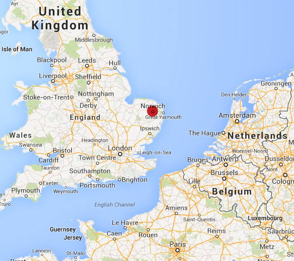

STUDY ABROAD
Norwich, Great Britain
Norwich, Great Britain
After doing a bit of research on English culture and emergency contact information I found out the US 911 equivalency in England is 999. This connects you to an operator that either connects you to the nearest police, fire or medical station. You can also reach the police in non-emergencies by dialing 101. In addition to calling 999 or 101 you are able to text the police in emergency situations.
For me the most complicated part of the study abroad process so far has been picking the correct classes at UEA and making sure they fit into my degree plan, that they are the correct number of credit hours and that a department chair would sign off on them. The process basically took three to four weeks because you have to meet with several department chairs, depending on the types of classes you take, and then meet with an advisor. I was lucky to have a great advisor since she helped me through most of the process — I was certainly grateful for her help. Transfer credit is difficult because European schools have a different credit system. All full-time students in the UK take 60 UCU credits per semester. Each class is usually 20 UCU credits so a traditional semester only contains three classes. In my case, for financial aid to be applied to my account and to be considered a full-time American student, I had to meet the full-time requirement for both schools — 60 UCU credits and 12 credit hours. You can see how this can be troubling with 3 credit hour classes or even a 5 credit hour class with two 3 credit hour classes. My advice for anyone thinking about studying abroad - travel Sophomore or Junior year, meet often with your college's advisor and start the equivalency process as soon as you can. Ask your study abroad office for help if you need someone to speak to an advisor or department chair about credits.
Over the next eight months I have decided to share my study aboard semester with everyone. You will see the preparation and planning before the trip as well as the experience aboard itself.
I have decided to spend my last semester as an undergrad student studying art history at the University of East Anglia in Norwich, England. Upon return, near Christmas time, I will have completed all the classes for a Bachelor of Fine Arts with an emphasis in Graphic Design and a minor in Art History. However, the school can not issue an official certificate of completion until the following spring semester because international grading and transcript requests do not make the December graduation deadline so my official graduation date is set for Spring of 2015, however, I will not have any classes in the Spring semester of 2015.
With the graphic design program at the University of Missouri — St. Louis, it only takes two more upper level art history classes on top of the required five to receive a minor in the subject. Having a minor in art history can open positions related to preservation, museums, galleries and cultural influence. I chose UEA (University of East Anglia) because UMSL has a great partnership with this school, not to mention its one of the highest rated schools in England. It also has one of the best art history departments since the Sainsbury Centre for Visual Arts is located on campus with a full art history only library and collection of world renown art — how cool is that?
Wrong. The University of East Anglia is in the small town of Norwich which is located in the territory of Norfolk on the east coast of England, across from Amsterdam and near Cambridge. Norwich is two hours, by train, Northeast of central London and five hours from Paris.

Yes. My studies will be less than 6 months so I am able to obtain a student visitor visa at port of entry. If I wanted to stay longer than 6 months I would have to come back to the states, apply for a longer visa and then head back to England.
I have to officially be in England on September 16-17 but classes do not start until September 22. Classes end on December 12th so my return flight will be on December 14 or 15 (Norwich time) just in time for Christmas.
I will be staying on campus in a dorm. International students are guaranteed housing on campus so although I have not been assigned a room yet I have a spot reserved.
Quite the contrary. All of my funds will come from scholarships, grants, savings and student loans. Every bit of funding/support helps.
I will not hold an official job overseas. Doing so requires a student work visa which is very costly. I would not make enough money in the short-term trip to cover the visa itself. However, I still plan to do as much freelance work as I can during my studies much like I currently do today.
Social Media